HeartbeatReceiver: executor liveness at the driver
component index
A Spark executor can be healthy from YARN's perspective yet unreachable from its Spark driver. HeartbeatReceiver is a named Spark RPC endpoint in the driver JVM. It records contact from known executor IDs, forwards in-flight metrics and detects long gaps. It does not use task completion, the availability of YARN containers, or the dynamic allocation idle deadline as its liveness signal.
Flow at a glance
- Last contact: At 0 seconds the driver hears from executor 7.
- 120-second check: Keep executor 7 at the exact 120-second timeout.
- 180-second check: Expire the silent executor and request a replacement.
Watch for: The driver measures a gap between heartbeats it receives. A timeout is not proof that YARN killed the container.
Show the animated flow

Owner and wire contract
SparkContext registers the endpoint before creating the task scheduler, then sends TaskSchedulerIsSet. The receiver also listens on the management queue: executor-added and executor-removed notifications become local RPCs that insert or delete executorLastSeen(id). The endpoint owns this map of driver receipt times, not executor clock readings. Its onStart schedules ExpireDeadHosts checks; SparkContext.stop() stops the endpoint, whose onStop cancels the checks and shuts down the event-loop and kill threads.
Each executor JVM looks up the driver's endpoint and starts its own executor-heartbeater, with a randomized first delay. This works even with no running tasks and no Python worker. Executor shutdown stops the sender. The request and response types are:
| Direction |
Payload and meaning |
Executor to driver: Heartbeat |
Executor ID, (taskId, accumulator updates) for running tasks, BlockManagerId, and executor metric peaks keyed by (stageId, stageAttemptId). Not a task result or a list of container asks. |
Driver to executor: HeartbeatResponse |
One flag: reregisterBlockManager. If true and the executor is not stopping, it calls BlockManager.reregister(). This is storage registration, not an instruction to launch or re-register the executor with YARN. |
Receipt and reply
Sequence diagram · Open full sizeText equivalent
sequenceDiagram
participant E as Executor heartbeater
participant H as Driver HeartbeatReceiver
participant S as TaskSchedulerImpl and DAGScheduler
participant B as BlockManagerMaster heartbeat endpoint
E->>H: Heartbeat with executor ID and metrics
Note over H: Refresh lastSeen for a known executor
H->>S: Dispatch executorHeartbeatReceived on the event-loop thread
S->>S: Attach known task stage IDs and post a metrics event
S->>B: BlockManagerHeartbeat with BlockManagerId
B-->>S: Is this block manager known?
S-->>H: Boolean
H-->>E: HeartbeatResponse with re-registration flagThe receiver updates lastSeen before dispatching metric processing. TaskSchedulerImpl joins task IDs to current task sets and omits per-task updates it can no longer identify. DAGScheduler posts SparkListenerExecutorMetricsUpdate and asks the storage endpoint; the storage reply determines the flag on the normal path. An unknown executor ID or not-yet-ready scheduler gets a reply without that forwarding; while the context is running the flag is true. This also handles a late, in-flight heartbeat after removal.
Worked timeout: executor 7 goes silent
Suppose the last receipt is at t=0, the timeout is 120 s and checks fall at t=60,120,180. The comparison is strictly greater than the timeout, so the first two checks do not expire 7. At t=180, the driver removes the entry and submits work to its separate kill thread. It requests kill-and-replace without lowering the executor target and sends the coarse-grained backend RemoveExecutor with a heartbeat-timeout loss reason so task loss does not depend on a later disconnect. This is a replacement request, not a guaranteed YARN grant.
Which timeout fired? The driver uses spark.storage.blockManagerHeartbeatTimeoutMs if set, otherwise spark.network.timeout; spark.network.timeoutInterval controls the check cadence. The executor separately times out its own RPC, counts consecutive failures, resets the count on success and can exit on reaching its limit. Driver thresholds; executor handling. A timeout is evidence of missing communication, not proof of a dead node: a long JVM pause, a delayed driver or a network break can look alike. The AM's allocate heartbeat to the RM reports resource requests/grants/completions; NodeManager-to-RM node health is another YARN channel. Neither supplies the Spark receiver's timestamps.